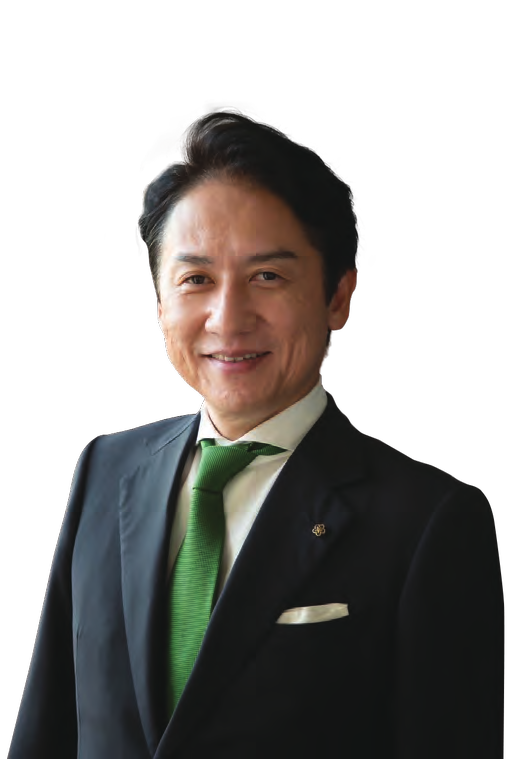

アーバンネイチャー北九州とは？
「アーバンネイチャー北九州」は北九州市の造語です。市域面積の約4割を森林が占め、響灘・周防灘・関門海峡の3つの海に囲まれ、豊かな生物多様性が息づく一方で、鉄鋼・化学工業の街として発展してきた北九州。都市と自然が近接するこの稀有な強みを活かし、世界目標「ネイチャーポジティブ」を市民・企業とともに実現するための北九州独自モデルとして生み出した言葉です。

「北九州市が誇る、都市に近接する豊かな自然を『アーバンネイチャー北九州』と定義し、『都市と自然の共生』というネイチャーポジティブのグローバルモデルとなることを目指します。」北九州市長 武内 和久｜出典：北九州市生物多様性戦略 2025-2030（令和7年5月）
2022年12月に採択された「昆明・モントリオール生物多様性枠組」が掲げる世界共通の目標です。「自然の損失を止め、回復の軌道に乗せる」ことを意味し、2030年までに生物多様性の減少傾向を反転させることが求められています。「自然を壊さない」だけでなく、「自然をより豊かにする」という積極的な姿勢を企業・行政・市民の全員に求める考え方です。
保全（Protect）：残された自然を守る。回復（Restore）：失われた自然を取り戻す。持続可能な利用（Sustainable Use）：自然の恵みを将来にわたって活用する。
3つのキーコンセプト
守るべき生物多様性から、世界共通の目標を経て、北九州独自の実装へ
「生物多様性」は私たちが守るべき自然そのもの。それを回復させる世界共通の目標が「ネイチャーポジティブ」です。そして「アーバンネイチャー北九州」は、都市と自然が近接する北九州の強みを活かしてその目標を実現するために北九州市が生み出した独自の言葉と取り組みです。
北九州市の特徴
工業都市でありながら、北九州には際立った自然の豊かさがある
工業都市イメージとのギャップ
鉄鋼・化学工業の街として知られる北九州ですが、市域面積の約4割を森林が占めます。皿倉山（622m）など3つの国立・国定公園が市内外に広がり、曾根干潟や響灘ビオトープをはじめ希少種の生息地が都市に近接して残ります。「工業都市でありながら、豊かな自然にあふれる」——このギャップこそが北九州の最大の強みです。
海岸線の生物多様性
響灘・周防灘・関門海峡の3つの性質の異なる海に囲まれた北九州は、渡り鳥の「十字路」にも位置します。曾根干潟（517ha）は国内有数の砂泥干潟で、絶滅危惧Ⅰ類のカブトガニが産卵に訪れます。シオマネキ・スナメリなど希少な生きものが、都市に隣接する海岸線に今も暮らしています。
世界的背景
なぜ今、生物多様性が世界的な緊急課題なのか
生物多様性の危機
世界の野生生物の個体群は過去50年間で平均73%減少しています（WWF「生きている地球レポート2024」）。生息地の破壊・汚染・外来種・気候変動が重なり、今この瞬間も多くの種が地球上から失われ続けています。
第6の大量絶滅
現在の種の絶滅スピードは自然状態の約100〜1,000倍。隕石衝突や火山噴火が原因だった過去5度の大量絶滅と異なり、今回は人間活動が原因という点で前例のない危機です。食料・水・気候・健康など私たちの生活基盤に直結します。
ネイチャーポジティブの位置づけ
2022年COP15で採択された「昆明・モントリオール生物多様性枠組」は、2030年までに損失を反転、2050年までに完全回復を掲げます。この国際合意が「ネイチャーポジティブ」を世界共通の目標に押し上げた歴史的な転換点です。
北九州市生物多様性戦略 2025–2030
「アーバンネイチャー北九州」は、北九州市が策定した公式戦略「北九州市生物多様性戦略」と、市民・企業が参加しやすい実装プラットフォームの二層構造で成り立っています。
上位レイヤーの「北九州市生物多様性戦略」は行政としての公式戦略。実装レイヤーの「アーバンネイチャー北九州」は、その目標を市民・企業にわかりやすく届けるためのプラットフォームです。この2つは別物ではなく、同じ目的を異なる読者に届けるためのセットです。
アーバンネイチャー北九州への関わり方
関わり方は3段階に整理できる。自然への関心を育てることから始め、活動・ネットワークへの参加を経て、最終的には企業のCSR・ESG・人材育成に組み込むことで取り組みが継続する。個人・市民団体・企業それぞれに対応した入口がある。
ファンになる
知って・好きになる
自然スポット紹介、写真展、イベント告知などで関心を持つ
活動する
参加する・つながる
ネットワーク参加、現場活動、勉強会への参加
経営に組み込む
持続する仕組みにする
企業の事業活動・CSR・ESG・人材育成に統合する
さらに詳しく知る
アーバンネイチャー北九州を構成する2つの重要テーマ